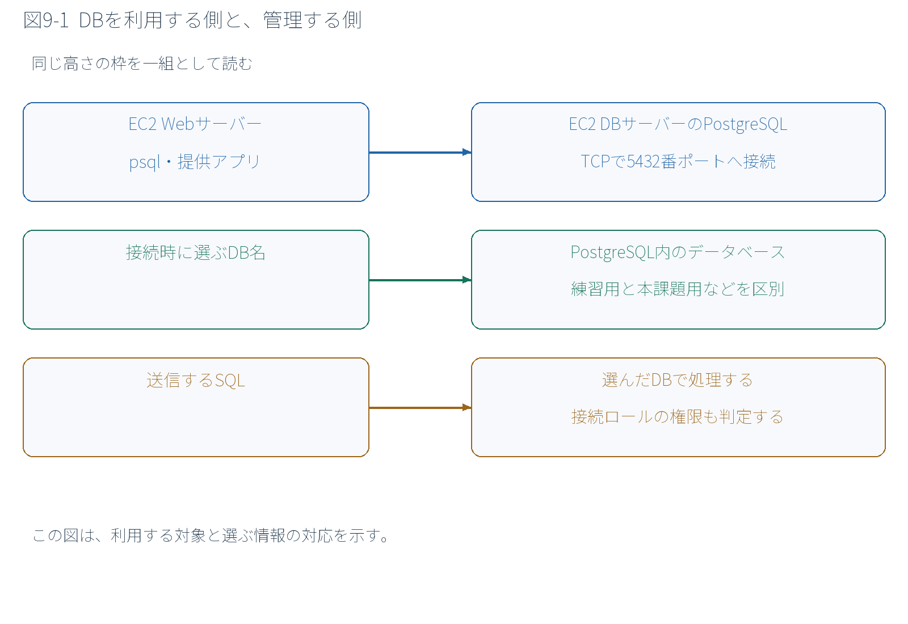
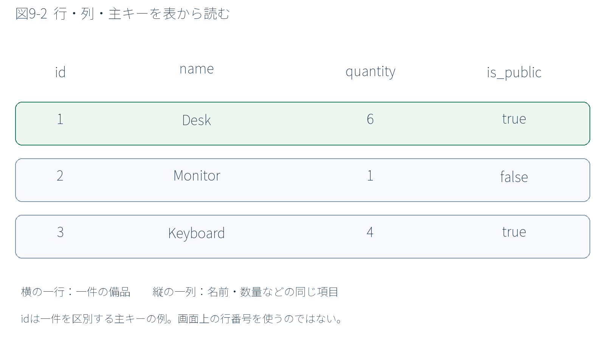
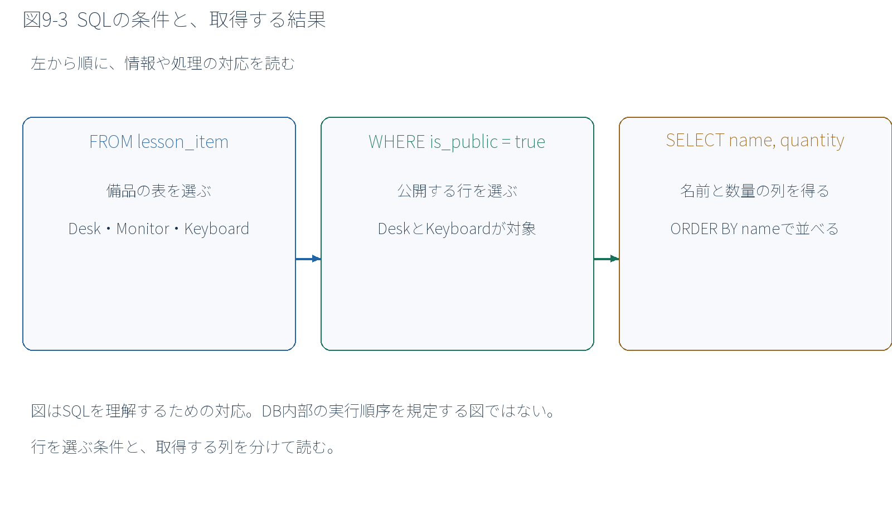

第9章 リレーショナルDBとSQLの基本
この章で分かること
学校の備品管理システムでは、備品の名前、数量、保管場所、一般向けに表示するかどうかを管理する。Webサーバーが一覧ページを作るたびに、保存したデータから必要な備品を取り出せる必要がある。
本章では、データベースが管理する仕事を、備品の表から考える。表、行、列、主キーを理解した後、SQLでデータを読む意味と書き換える意味を学ぶ。SQLの例は説明用の表を使い、アプリのプログラムを書く作業とは分けて扱う。
9.1 備品の情報を、まとまりとして管理する
備品を少数だけ記録するなら、テキストファイルや表計算でも一覧を作れる。しかし複数の担当者が同時に変更し、コードの重複を防ぎ、必要な行だけを探すとなると、保存する文章だけでなく、変更の順序や値の整合性を管理する必要がある。
データベース（DB）は、関連するデータを整理して管理するまとまりである。リレーショナルデータベースでは、データを表として扱い、必要に応じて複数の表を関連付ける。
例えば、数量を数値として管理すれば、6個ある備品だけを探したり、数量を増減したりできる。備品コードに重複を許さない制約を設ければ、同じコードの別の備品を登録しようとしたときに拒否できる。DBは値を保存するだけでなく、許された操作と整合性を管理する。
9.2 PostgreSQL、データベース、クライアントを分ける
DBMS（Database Management System）は、DBを管理するソフトウェアである。今回のDBサーバー上では、PostgreSQL（ポストグレスキューエル）を使う。PostgreSQLはクライアントから接続を受け、データを読む・書く処理を実行する。
一つのPostgreSQLで、練習用と本課題用など複数のデータベースを管理できる。接続時には、どのデータベースを使うかも指定する。コンピューターとしてのDBサーバー、管理ソフトウェアとしてのPostgreSQL、その中の個別のデータベースを区別しよう。
psqlは、PostgreSQLへ接続してSQLを送る端末用のクライアントである。Webサーバー上で動く備品管理アプリも、DBへ問い合わせるときにはクライアントとなる。psql

図9-1 ソフトウェア、データベース、利用する側。 通信する相手はDBサーバー上のPostgreSQLであり、その接続で利用するデータベースを選ぶ。
9.3 表、行、列、型を読む
次は、説明用のlesson_itemという表である。表をテーブル、横に並ぶ一件のデータを行、縦に並ぶ各項目を列という。
| id | name | quantity | is_public |
|---|---|---|---|
| 1 | Desk | 6 | true |
| 2 | Monitor | 1 | false |
| 3 | Keyboard | 4 | true |
一行が一件の備品を表す。name列は名前、quantity列は数量、is_public列は一般向けに表示するかどうかである。trueとfalseは、真・偽を表す値である。
列にはデータ型を定める。例えば、名前は文字列、数量は整数、公開区分は真偽値として扱う。値が同じ文字で見えても、数値として保存した6と、文字列として保存した'6'では、使う演算や比較の意味が異なる。表とデータ型

図9-2 一件を表す行と、項目を表す列。 idは一件を区別する手掛かりである。表の見た目の何行目かを識別子として使うわけではない。
9.4 主キーと制約で、データの整合性を保つ
主キーは、表の中の一行を一意に区別するために選ぶ列、または列の組である。上の例ではidを使う。同じ名前の備品が複数あっても、idが違えば別の行として区別できる。主キーには重複とNULLを許さない。
制約は、保存する値が満たす条件である。重複しないこと、必須の値が欠けないこと、数量が許された範囲であることなどを定める。NULLは値がないことを表し、数値の0や空の文字列とは異なる。制約
複数の表を関連付ける場合には、別の表のキーを参照する外部キーを使える。例えば保管場所を別の表で管理し、備品側でその場所のidを参照すれば、存在しない場所への関連付けを防げる。
また、番号を自動で割り当てるためにシーケンスという仕組みを使う場合がある。表へ行を追加する権限と、シーケンスから番号を取得する権限は別である。自動の番号には欠番が生じる場合もあり、番号を行数の代わりとして扱わない。シーケンス
9.5 SQLで、必要な列と行を取り出す
SQL（Structured Query Language）は、DBへデータの取得や変更などを伝える言語である。データを読む基本の文がSELECTである。
説明用SQL：公開する備品の名前と数量を取り出す。入力場所はpsql内である。
SELECT name, quantity
FROM lesson_item
WHERE is_public = true
ORDER BY name;SELECTの後で取り出す列、FROMで対象の表、WHEREで取り出す行の条件を指定する。ORDER BYは結果を並べる順序であり、この例では名前の昇順になる。SQLの終わりにはセミコロンを書く。
表示例：先ほどの説明用の表から得られる結果。
name | quantity
----------+----------
Desk | 6
Keyboard | 4
(2 rows)公開区分がfalseのMonitorは結果に含まれない。結果の列は二つで、行は二件である。SQLが選ぶ列と、WHEREが選ぶ行を分けて読む。SELECTによる取得

図9-3 条件と取得結果の対応。 表示順を決めたい場合はORDER BYで指定する。保存されたときの順番や、以前表示された順番が、次の結果でも保証されるとは限らない。
9.6 SQLでデータを変更する
INSERTは行の追加、UPDATEは既存の行の変更、DELETEは行の削除に使う。UPDATEとDELETEでは、WHEREの条件により対象を絞る。条件を付けなければ、対象の表のすべての行が変更・削除の対象になり得る。
説明用SQL：idが1の数量を変更し、確定せずに取り消す例。
BEGIN;
UPDATE lesson_item SET quantity = 7 WHERE id = 1;
SELECT id, name, quantity FROM lesson_item WHERE id = 1;
ROLLBACK;トランザクションは、複数の処理を一つのまとまりとして扱う仕組みである。BEGINで始め、COMMITで確定し、確定前ならROLLBACKでそのトランザクション内の変更を取り消す。この例では、同じ接続で変更後の値を見た後に取り消している。COMMIT済みの変更を、後から単にROLLBACKして戻せるという意味ではない。トランザクション
実際の備品管理アプリでは、管理画面の追加・変更をアプリがSQLへつなげる。一般の一覧を見る操作と、保存した値を変更する操作は、必要なDB権限も異なる。
9.7 SQLを入力する場所と、接続の結果を読む
シェルへ入力するpsqlは、DBクライアントを起動するコマンドである。起動したpsqlの中で、SELECTなどのSQLを入力する。psqlが表示する接続先名付きのプロンプトは、OSのシェルのプロンプトと区別する。
psqlには、SQL以外に\conninfoや\qなどのメタコマンドもある。\conninfoは接続情報を表示し、\qはpsqlを終了する。SQLのように末尾へセミコロンを加える必要はない。
アプリ用の表をまだ作っていない段階でも、接続先と実行者を調べられる。
実行場所：接続済みのpsql内。
SELECT current_database(), current_user;
SELECT 1;最初のSQLは、現在のデータベース名とDB側の実行者を返す。二つ目は定数を返すため、備品表がなくてもSQLが処理されることを確認できる。ただし、接続できたことと、個別の備品表を読む権限があることは別である。
練習・課題4では、WebサーバーからDBサーバーへ認証して接続し、SQLを実行できる構成を作る。接続条件とDBの権限を、次の第10章で詳しく扱う。
章末問題
問1
PostgreSQL、個別のデータベース、psqlは、それぞれ何を担当するか。
問2
数量が6の備品について、名前だけを読むには、SELECT、FROM、WHEREでそれぞれ何を指定するか。
問3
主キーには、表を画面へ表示したときの行番号ではなく、一件を区別する値を使うのはなぜか。
問4
DBへ接続してSELECT 1に成功すれば、備品表のUPDATEも許されていると言えるか。
章末解答
問1
PostgreSQLはDBを管理するソフトウェア、個別のデータベースは管理するデータのまとまり、psqlは接続してSQLを送るクライアントである。
問2
SELECTでname、FROMでlesson_item、WHEREでquantity = 6を指定する。
問3
取得条件や並べ方によって表示上の位置は変わる。主キーは位置によらず同じ行を一意に識別するために使う。
問4
言えない。接続と定数のSQLの処理は確認できるが、表の存在と、その表を変更する権限は別に必要である。
参考資料
確認日：2026-11-03。lesson_itemは説明用の表であり、課題の備品データとは別の例である。
・ SELECT
・ 制約
・ トランザクション
・ シーケンス
・ psql